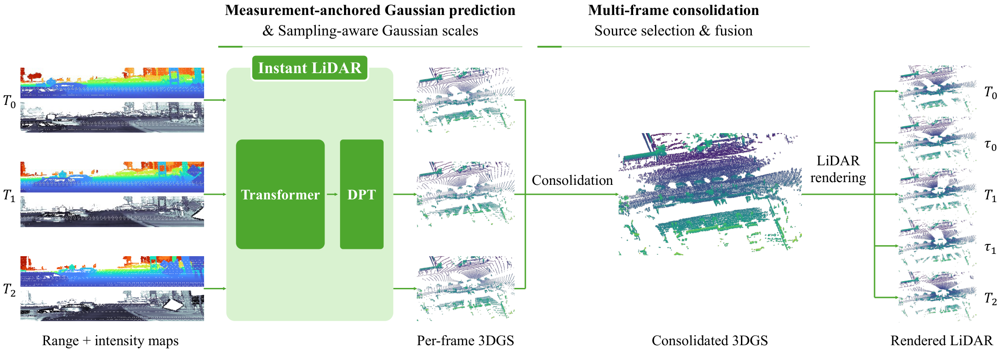
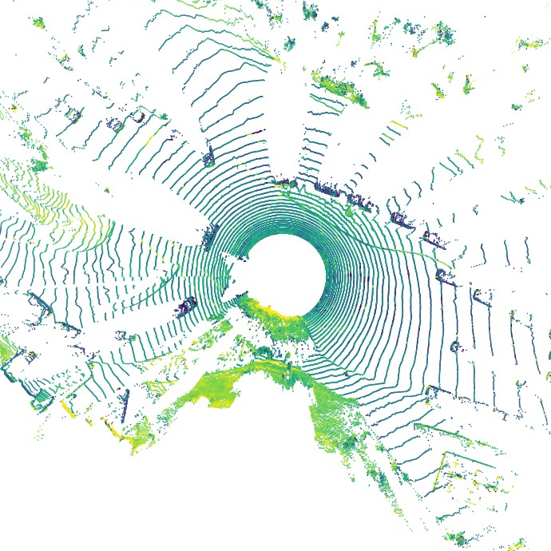
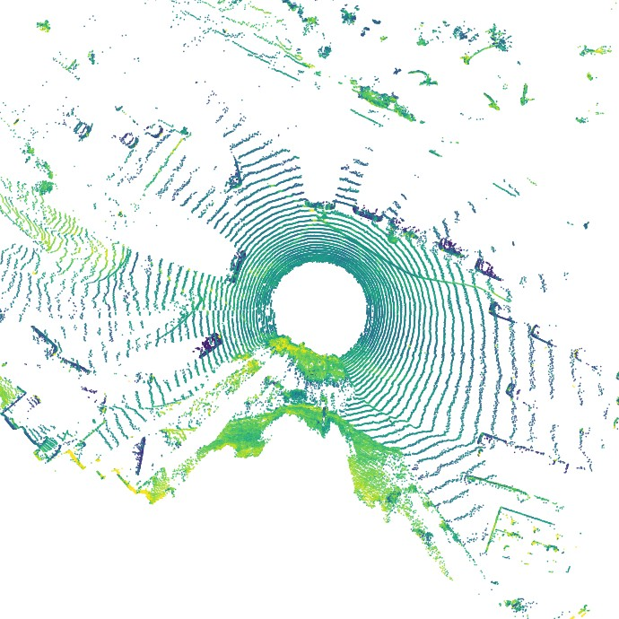

Anchor to measurements
Predict Gaussian attributes around observed LiDAR returns.
Instant LiDAR · NVIDIA
Turn a driving log into a reusable Gaussian scene.
Render new viewpoints, without optimizing each scene separately.
Feed-Forward Gaussian Reconstruction for LiDAR Simulation
01 / Overview
LiDAR simulation needs a scene that can be queried from different positions and sensor settings. Building that scene usually takes lengthy per-scene optimization.
Instant LiDAR predicts Gaussian assets directly from LiDAR scans. It combines predictions across the driving log into a reusable scene, reducing reconstruction from over an hour to about a minute on Waymo.
LiDAR measurements provide strong geometric priors, but directly initializing Gaussians from them yields poor reconstruction due to nonuniform sampling and a limited field of view. Sparse returns leave surface gaps, while combining scans expands coverage but introduces redundant primitives. Instant LiDAR combines measurement-anchored Gaussian prediction, sampling-aware Gaussian scales, and multi-frame consolidation. The predictor refines attributes anchored to recorded returns, the scales adapt spatial support to LiDAR sampling, and consolidation merges overlapping predictions into a compact asset spanning the driving log. Compared with NuRec, Instant LiDAR reconstructs scenes approximately 46× faster on Physical AI and 70× faster on Waymo, while retaining useful downstream detection quality.
02 / Method
A feed-forward predictor, followed by multi-frame consolidation.
No optimization loop for each new scene.
Predict Gaussian attributes around observed LiDAR returns.
Adjust Gaussian support to the spacing of LiDAR measurements.
Merge overlapping predictions across frames into one reusable asset.

03 / Reconstruction speed
Time from input scans to a renderable Gaussian asset.
Same NVIDIA H20 GPU, six clips per dataset.
66seconds
Linear scale · lower is better
Times exclude offline training, rendering, and detection. The speedup comes with a gap in overall geometric fidelity to NuRec.
| Method | Time (s) ↓ | CD (m) ↓ | F@5 ↑ |
|---|
CD: Chamfer distance. F@5: F-score at 5 cm. All values are reported in the paper.
04 / Interactive comparison
Rotate both scans together. Move off the recorded path.
Look at the road, vehicle shapes, and detector outputs.


Waymo w100pap1 · frame 22 · recorded pose · same 90 × 90 m crop
Interactive views of saved rendered scans, not live model inference. Both methods share the camera, crop, and intensity scale. No points are subsampled within this crop.
The same frozen CenterPoint detector is used across methods. Boxes use a score threshold of 0.3 and saved, same-class greedy matching at 3D IoU 0.7 / 0.5 / 0.5 for vehicles / pedestrians / cyclists. These per-frame matches are a qualitative aid, not AP. Aggregate evaluation is shown below. There is no measured ground-truth scan at the shifted sensor pose.
NuRec, Instant LiDAR, and ground truth along the same recorded trajectory.
05 / Downstream detection
Evaluate the rendered scans with one frozen CenterPoint model.
Keep the dataset, detector, and query setting matched.
| Reconstruction | Vehicle AP ↑ | Pedestrian AP ↑ |
|---|
There is still a gap to NuRec on geometric reconstruction metrics. The gain is much faster reconstruction, with stronger detection on held-out and shifted views. On conditioning views, NuRec retains higher vehicle AP.
The method relies on accurate sensor poses and dynamic-object annotations. Joint camera–LiDAR reconstruction is outside the current model’s scope.
06 / Application
Generate the data. Reconstruct the asset. Reuse the scene.
A complete pipeline from control signals to LiDAR simulation.
A separate application demo: generation is followed by LiDAR reconstruction. This scene takes about 51 seconds to reconstruct, including model loading, inference, fusion, and saving; Cosmos generation is excluded. This example and the video’s duration are separate from the paper’s 66-second Waymo average.
The paper
Feed-Forward Gaussian Reconstruction
for LiDAR Simulation